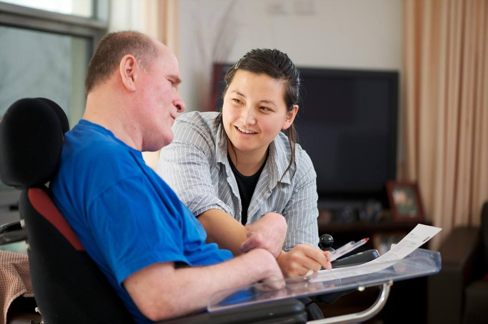
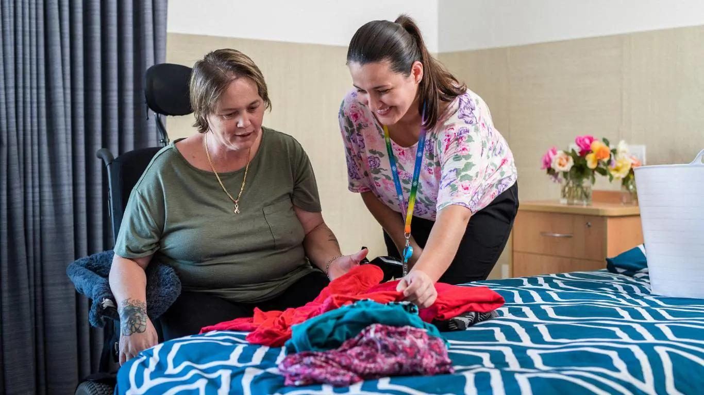

Ischaemic stroke
A clot blocks an artery supplying the brain. The most common type, accounting for roughly 8 in 10 strokes.
Learn more ›In-home and community support for adults after a stroke. We work alongside your doctors and therapists, match a consistent worker to the person, and plan support to start when they come home.

Sources: Stroke Foundation, Economic Impact of Stroke in Queensland (2024 report, released April 2025); Stroke Foundation, Stroke in Australia 2023 (national prevalence); NDIA participant data, 30 June 2026.
You know your routines better than anyone. We start with what matters to you, whether that is getting dressed on your own, cooking again or returning to the club, and build support around it at your pace.
The weeks after a stroke are overwhelming. We give you one named contact, a plain-language plan and reliable cover so you can rest, work or look after your own health.
We reply to discharge enquiries within 24 hours, can attend a handover or family meeting, and meet the person before they leave so the first day home is planned, not improvised.
Clear scope, quick answers and written agreements. If a participant’s plan type or area is outside what we can support, we say so on the first call so you can place them elsewhere.
Rates sit at or below the NDIS price limits and line items match the service agreement, so claims are quick to process and easy to reconcile.
Support after stroke calls for a different approach from general disability support. We work from the treating team’s plan, introduce your worker before the first shift, and keep family, support coordinators and therapists informed throughout.
Cade McMillan, founder, brings several years of hands-on disability and community support experience, and oversees every referral personally.
Most NDIS providers support every kind of disability. Stroke, with its sudden onset, fatigue, communication changes and long recovery curve, can become an afterthought. We built our service the other way round: every worker, roster and agreement starts with one question. What does someone recovering from stroke actually need?
| A typical generalist provider | Stroke Recovery Queensland | |
|---|---|---|
| Training | General disability induction | Stroke-specific induction, plus the person’s own therapy plan before the first shift |
| Hospital discharge | Starts on or after discharge day | Introduction on the ward and a worker in place on day one |
| Fatigue and communication | Often treated as behaviour or motivation | Planned for with the speech pathologist’s and OT’s guidance |
| Therapy between visits | Limited link to the therapy team | Programs reinforced through the week, with feedback to the clinician |
| Contact | Rotating coordinators | One named contact for each family |
We support the full range of effects, whatever the type of stroke. If you are unsure whether we are the right fit, call us. You will get a straight answer on the first call.
Ischaemic, haemorrhagic and transient events differ in cause, severity and recovery. Where in the brain the stroke occurs matters just as much.
A clot blocks an artery supplying the brain. The most common type, accounting for roughly 8 in 10 strokes.
Learn more ›A blood vessel ruptures and bleeds in or around the brain. Less common, and often more severe.
Learn more ›A brief blockage with stroke symptoms that resolve. A warning sign that requires urgent medical review.
Learn more ›Delivered in the home and community, aligned with your therapy plan.
Personal care, meals, medication prompts and household routines, delivered the way the person prefers.
Reinforcing occupational therapy, physiotherapy and speech programs between appointments.
Where possible, an introduction before discharge, handover from the treating team and support planned for the first day home.
Graded return to outings, interests and social connection.
Rehabilitation, specialist and GP visits, with follow-through afterwards.
Dependable support at home so family carers can rest and protect their own health.
Shopping, meal preparation and routines rebuilt around new abilities, including modified diets.
Safe, correct use of equipment, guided by the occupational therapist’s recommendations.
We meet the person and the ward team, learn the routine and the transfer techniques, and have a worker in place on day one. No gap in support, and no scramble for the family.

Support built around personal goals, preferred routines and the pace of recovery.
A named contact, clear updates and dependable respite.
A prompt answer on capacity, and a worker ready for discharge day.
Replies within 24 hours, written agreements and concise reporting.
Invoices that match the service agreement line by line.
Therapy programs reinforced through the week, with feedback to the clinician.
In-home stroke support across 28 areas from Bundaberg and Hervey Bay to the Gold Coast. If you live nearby, call and we will tell you honestly what is practical for your address.
Indicative map, not to scale. Each marker is an area with its own page.
From Bundaberg and Hervey Bay to the Gold Coast. Select a marker to see the area, its nearest hospital and its NDIS stroke data.
Find your region › All locations and the NDIA data behind them ›
Send a referral or call. We respond within 24 hours.
We confirm plan type and funding with you, the plan manager or the coordinator.
We meet the person, family and ward team, and introduce a worker before the first shift.
A written agreement, a clear roster and a structured review in the first weeks.
Not yet. Stroke Recovery Queensland supports plan-managed and self-managed NDIS participants, which in Queensland is about 97% of NDIS participants with stroke. We cannot support NDIA-managed participants until we are registered. We will tell you before we start if your plan type is not a fit.
Yes. We can meet the person and the ward team before discharge, learn their routines and have a worker ready for the first day home. Send a referral as early as you can.
Call us first. We can look at the plan with you or your support coordinator and tell you honestly whether the funding fits. We do not charge to talk it through.
We aim to reply within 24 hours, including to questions where you do not have a name or NDIS number yet.
Stroke is our focus. We also support people with other acquired brain injuries and related neurological conditions, and if someone has other health conditions, such as diabetes or a heart condition, we support the whole person.
We charge at or below the NDIS price limits, and we put rates and hours in a written service agreement before the first shift. See Rates & Agreements for details.
A practical guide to discharge, rehab, equipment and the first weeks at home.
A general timeline of recovery, and why practice and routine matter.
Questions to ask a provider, and what to look for in a service agreement.
Send a referral or call Cade directly. You do not need an NDIS number to ask a question, and we respond within 24 hours.
A real person reads every referral and replies within 24 hours.
Helpful to have: their name, NDIS number, date of birth, gender, how the plan is managed and their primary disability. Documents are optional.
No names or NDIS numbers needed. Just the suburb, roughly how many hours a week and the kind of support.
These settings are saved on this device.
National Relay Service 133 677. Interpreter: TIS National 131 450.